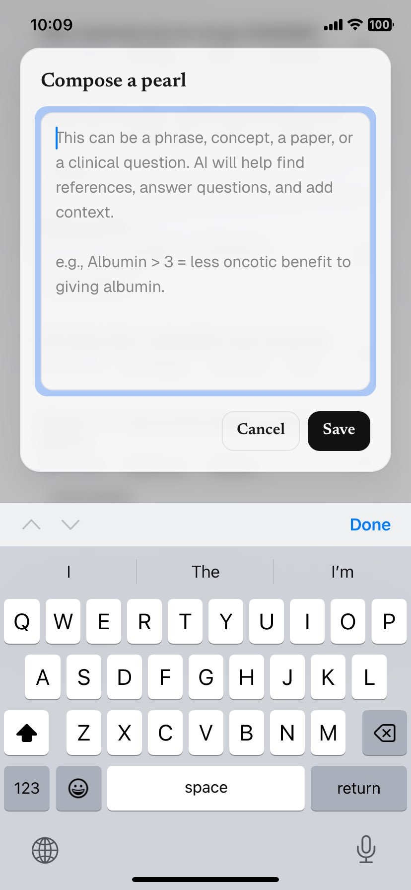
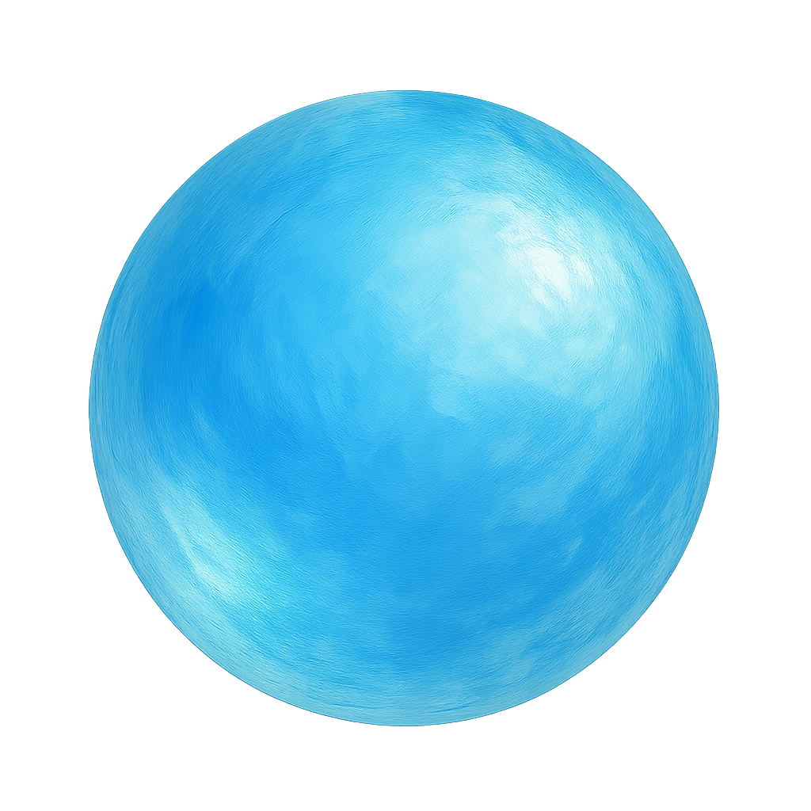
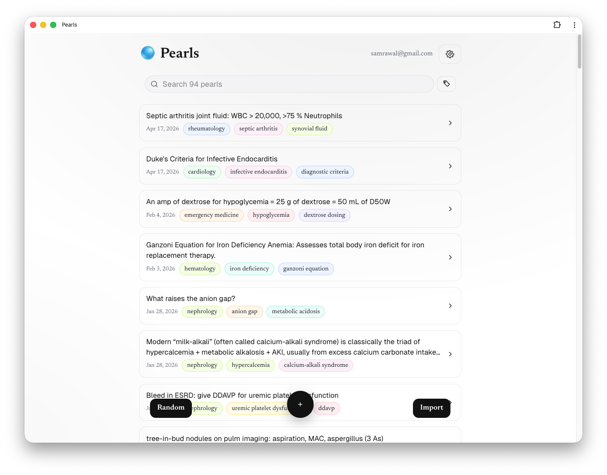
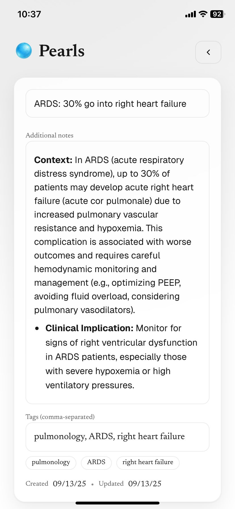
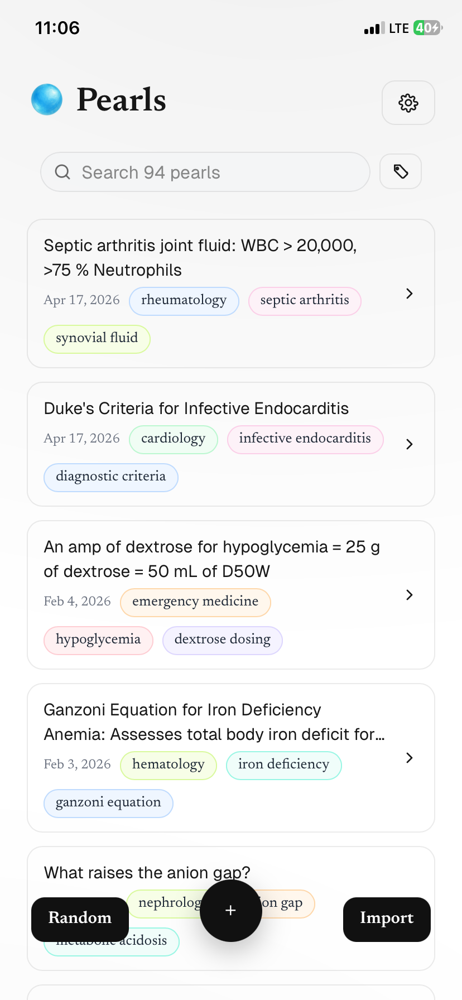

01
Add a pearl.
Quickly type a phrase, a drug dose, or a question from rounds. Short notes are enough.


PearlsCapture every bedside pearl. Pearls automatically adds context, fetching clinical guidelines and auto-tags so your library stays searchable and studies with you—from rounds to Anki.

Quickly type a phrase, a drug dose, or a question from rounds. Short notes are enough.

Pearls automatically fetches relevant clinical guidelines and references directly to your note.

Your notes are automatically saved, tagged, and synced. Browse your library or filter by specialty when you're back on the wards.

Notes become readable explanations with supporting references you can verify.
Specialty, condition, and topic tags make the library searchable without extra upkeep.
Turn any note into a study card and export it directly to Anki.
Capture on your phone and review on desktop. Your library stays in sync everywhere.
Pearls is designed to help you capture and review your own learning points.
AI-added context is a starting point for review. Verify references before clinical use.
Never include patient-identifying information in your clinical notes.
Capture what you learn today, then find it, understand it, and study it when it matters.
Works in any browser. Syncs across your devices. No setup required.